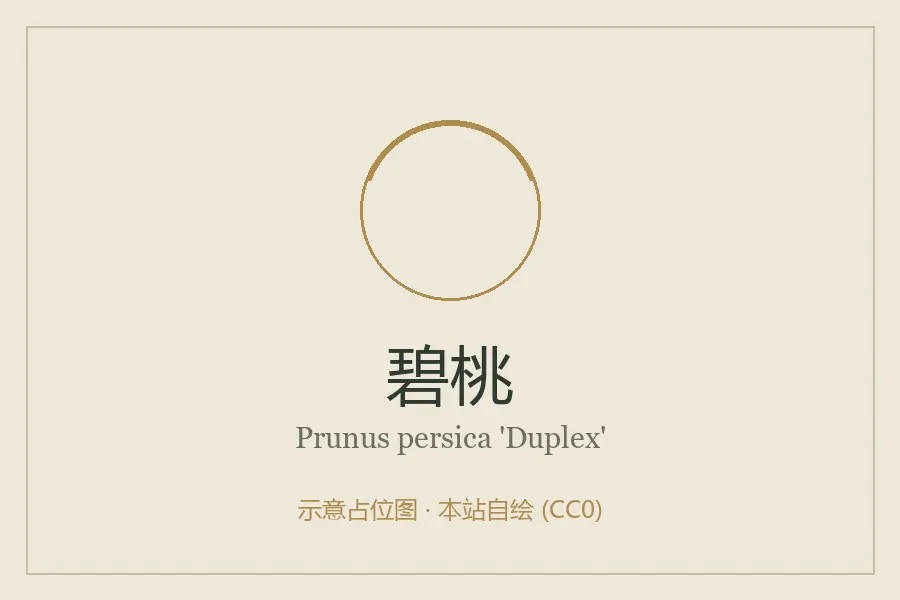

灌木与花木 · 植物界
碧桃 Prunus persica 'Duplex'

中国原产的桃之观赏变型，花重瓣、色彩娇艳，先花后叶或花叶同放，是春季园林与庭院中最常见的观花树种之一。
- 分类
- 门被子植物门纲木兰纲目蔷薇目科蔷薇科属李属
- 栖息环境
- 海拔 1000 米以下的向阳坡地、庭院与公园，喜光耐寒耐旱
- 地理分布
- 原产中国；华北、华东、华中各地广泛栽培，以北京、上海、杭州等地最盛
- 保护级别
- 暂无评估；为长期栽培的观赏品种，野生类型为桃
物种志
碧桃为蔷薇科李属落叶小乔木，高 3–8 米，树皮灰褐色，小枝红褐色。叶片椭圆状披针形，边缘具细锯齿。花单生或两朵并生，重瓣，花瓣层层叠叠，有粉红、深红、白色及复色等，花径 4–6 厘米，花期 3–4 月，先花后叶或花叶同放；果实为核果，观赏品种结果少而小，果期 6–8 月。
碧桃是桃的观赏变型，原产中国，栽培历史可追溯到两千多年前，《诗经》中已有“桃之夭夭，灼灼其华”的句子。它喜光、耐寒、耐旱，适宜疏松肥沃、排水良好的沙壤土，忌积水。碧桃品种繁多，有红花碧桃、白花碧桃、洒金碧桃、垂枝碧桃等，常植于公园、庭院与行道旁，北京植物园、上海南汇的桃花节都以碧桃为主角。桃胶可食用，桃木在民间被认为有辟邪之意。
形态与习性
- 株高3–8 m，小枝红褐色
- 花期3–4 月，先花后叶或花叶同放
- 果期6–8 月，观赏品种结果少而小
- 光照极喜光，荫蔽处开花稀少
- 水分耐旱，怕积水
- 土壤疏松肥沃、排水良好的沙壤土
- 主要用途春季观花，庭院、公园与行道绿化
趣味知识
- 碧桃是桃的观赏变型，以观花为主，多数品种结果少或几乎不结果。
- 《诗经》中“桃之夭夭，灼灼其华”描写的正是桃花盛开的景象。
- 碧桃品种丰富，有红花、白花、洒金、垂枝等类型，花期可持续月余。
- 桃胶是桃树皮分泌的树脂，可食用，民间常用来煮糖水。